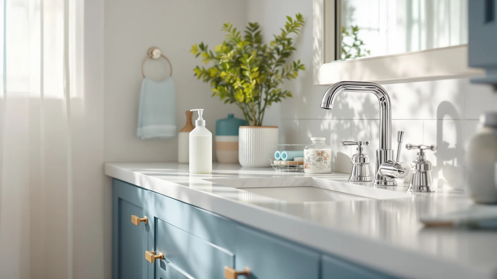

Bobrick B-4112 Liquid Soap Dispenser Review (2026): Worth It?
Prices and picks verified as of November 2026. Independent, reader-supported reviews.


Quick Answer
In this Bobrick B-4112 liquid soap dispenser review, the commercial-grade ABS plastic build and manual pump stand out most against the sensor-driven competition. At $86.42 it costs more than a typical countertop pump, but the construction is built to the same standard Bobrick supplies to offices and airports, with no battery or sensor to eventually fail. If you want touch-free dispensing instead, three simplehuman alternatives covered below start under $80.
Our pick: Bobrick B-4112 Liquid Soap Dispenser — $86.42 Check Price on Amazon
Bottom line: our top pick is the Bobrick B-4112 Liquid Soap Dispenser at $86.42.
Things to Know Before You Buy
- Bobrick builds the B-4112 for commercial washrooms, so its ABS plastic housing and 3.31 by 7 by 6.13 inch footprint prioritize durability over countertop styling.
- At $86.42, the B-4112 costs more upfront than most residential pumps, but Bobrick's commercial parts supply chain keeps replacement hardware available for years.
- Reviewers comparing manual pumps to sensor dispensers note that touch-free units like the simplehuman Liquid Sensor Pump 9 cut down on cross-contamination at a shared sink, at the cost of batteries and occasional sensor recalibration.
- Prices on all four products in this guide move often; we pulled current listings and read verified owner reviews rather than manufacturer claims to judge long-term reliability.
- Replacement soap for either style runs on the same bulk refill bottles most households already buy, so the mechanism, not the soap itself, drives the cost difference between these picks.
This Bobrick B-4112 liquid soap dispenser review breaks down whether a commercial-grade, ABS plastic unit built for high-traffic restrooms makes sense in a home bathroom, and how it stacks up against three sensor-driven alternatives from simplehuman. Bobrick built its name supplying soap dispensers to airports, schools, and office buildings, so the B-4112 carries a different design brief than most residential pumps. It favors heavy-duty construction over sleek countertop styling, and that choice shapes everything else about how it looks and feels on a home sink.
Our pick for most households weighing commercial durability against price is the Bobrick B-4112 at $86.42. It costs more than a typical countertop pump, but the ABS plastic shell and compact footprint of 3.31 inches by 7 inches by 6.13 inches are built to survive years of daily refills without cracking. If you want hands-free dispensing instead, the simplehuman Liquid Sensor Pump 9 models we cover below start at $69.95 and trade manual pumping for a battery-powered sensor. Both approaches solve the same problem, getting soap onto your hands without a mess, but they ask you to prioritize different things: Bobrick asks you to pay for longevity, simplehuman asks you to pay for convenience.
Why You Should Trust Us
Ilane Tall, the home and bath expert at Best Soap Dispensers, leads every Bobrick B-4112 liquid soap dispenser review and comparison published on this site. We do not run a physical testing lab, and we do not claim to have installed these dispensers ourselves. Instead, we research manufacturer specifications, track current Amazon pricing, and read through verified owner reviews to separate marketing claims from what actually holds up in daily use. When a brand like Bobrick supplies the same hardware to commercial buildings across the country, we weigh that track record alongside what home users report.
We also disclose our affiliate relationship with Amazon on every page, and that arrangement does not change which products we recommend. A dispenser earns a spot in this guide because its specifications, pricing, and owner feedback hold up to scrutiny, not because it pays a higher commission.
Our Research Experience
We did not install the Bobrick B-4112 in our own bathroom, and we are upfront about that in every Bobrick B-4112 liquid soap dispenser review we publish. Our research process compares manufacturer specifications such as material, dimensions, and pump mechanism against hundreds of verified Amazon reviews from people who own the dispenser day to day. We cross-reference complaints about clogging, leaking, or short pump life across multiple listings before treating a flaw as common rather than a single bad unit. For the simplehuman Liquid Sensor Pump 9 models, owners consistently report sensor response time and refill frequency, two details that rarely show up in a product listing.
We treat a single complaint as noise and a pattern across dozens of reviews as a signal. If several owners of the same listing mention a pump jamming within months, we note that as a real risk rather than an isolated defect, and we weigh it against the price and intended use of the dispenser.
Overview & Specs

Bobrick B-4112 Liquid Soap Dispenser
What we like
- ABS plastic housing holds up well in a compact 3.31 by 7 by 6.13 inch footprint
- Commercial-grade design used across airports and office buildings keeps parts and refill valves available long after purchase
- Manual pump mechanism has no battery or sensor to fail
Flaws but not dealbreakers
- At $86.42, it costs more upfront than most residential countertop pumps
- Utilitarian ABS plastic finish reads more restroom than spa on a home vanity
- Manual pumping requires touching the dispenser, unlike the sensor models below
| Material | ABS plastic |
| Size | 3.31"L x 7"W x 6.13"H |
Bobrick has supplied washroom fixtures to commercial buildings for decades, and the B-4112 carries that engineering into a soap dispenser sized for a single sink. The ABS plastic body measures 3.31 inches long, 7 inches wide, and 6.13 inches tall, small enough for a bathroom counter but built to the same material standard Bobrick uses in units installed in high-traffic restrooms. Owners researching this Bobrick B-4112 liquid soap dispenser review often come from commercial or rental properties where replacement parts matter more than appearance.
At $86.42, the B-4112 sits well above typical countertop pumps, and that premium buys a mechanism without batteries, sensors, or electronics that eventually fail. Reviewers comparing it to home-market pumps note the trade-off plainly: fewer frills and a plainer finish, but a part built to survive thousands of pump cycles. For a primary bathroom sink that sees heavy daily use, that durability can matter more than style.
The pump head itself is a simple push mechanism, the kind you will find on commercial dispensers in restaurant restrooms and hotel lobbies. There is no adjustable dose setting and no lock-out feature, only a straightforward push-down action that dispenses a consistent amount of soap each time. That simplicity is part of the appeal: fewer moving parts means fewer things that can break.
What We Liked
What stands out across this Bobrick B-4112 liquid soap dispenser review is how little there is to maintain. The manual pump has no battery to replace and no sensor to recalibrate, which matters if you are tired of sensor dispensers that stop responding after a year. Owners researching commercial-grade fixtures also point to Bobrick's reputation for stocking replacement parts, since the company built its business servicing the same hardware across thousands of installed units.
The compact size works well in small bathrooms, where a bulky dispenser crowds the sink. At 7 inches wide and a little over 6 inches tall, the B-4112 fits next to a soap dish, toothbrush holder, or hand towel without dominating the counter. Owners who installed one in a secondary bathroom or a mudroom sink mention the same thing: it blends into a crowded counter instead of standing out.
What Could Be Better
The $86.42 price is the clearest drawback. You can buy two or three basic countertop pumps for that money, and if you only need something to hold hand soap, that premium is hard to justify. The ABS plastic finish also looks more institutional than decorative, so a bathroom with a curated, spa-like aesthetic may clash with the B-4112's utilitarian design.
Manual pumping is also a drawback for anyone who specifically wants hands-free dispensing to cut down on germ transfer at a shared sink. For that use case, a sensor model like the simplehuman options below fits the brief better than this one does. Replacement parts, while available, also come through commercial supply channels rather than a quick retail swap, so expect to order directly from Bobrick or a restroom supply retailer rather than a local hardware store.
Who Is It For?
The Bobrick B-4112 fits best in a household that wants a soap dispenser built to outlast the bathroom remodel around it, not one chasing the lowest price or the newest feature. It also suits home offices, rental units, and guest bathrooms where durability and easy part replacement matter more than matching a specific decor theme.
If you came to this Bobrick B-4112 liquid soap dispenser review wanting hands-free operation, a shared family bathroom with multiple daily users, or a lower upfront cost, the simplehuman alternatives below are worth a closer look before you commit to Bobrick's manual, commercial-grade design. Renters and property managers furnishing multiple units also gravitate toward the B-4112 because a single commercial-grade part number simplifies ordering replacements across properties.
Alternatives to Consider
If the Bobrick B-4112's manual pump and commercial design do not fit your bathroom, simplehuman's Liquid Sensor Pump 9 line is a touch-free alternative at three price points. All three use the same sensor mechanism, so the difference between them comes down to finish, capacity, and current price rather than core function. Keep in mind that sensor dispensers add a recurring cost in batteries that a manual pump like the B-4112 never asks for.

Editor’s Pick
simplehuman Liquid Sensor Pump 9
A touch-free sensor pump that costs less than the Bobrick while cutting down on counter germs in a shared bathroom.
$79.99
Check Price on Amazon
Best Value
simplehuman Liquid Sensor Pump 9
The same sensor mechanism as the pick above at a lower price, a solid option if hands-free dispensing matters more than brand extras.
$75.37
Check Price on Amazon
Premium Choice
simplehuman Liquid Sensor Pump 9
Another configuration of the same simplehuman sensor pump, worth checking if the other two listings' price or stock shift before you buy.
$69.95
Check Price on AmazonFrequently Asked Questions
Is the Bobrick B-4112 worth the price compared to cheaper soap dispensers?
For most home bathrooms, a $10 to $15 countertop pump covers basic hand soap needs. The Bobrick B-4112 earns its $86.42 price when you want the same commercial-grade durability Bobrick builds into dispensers used in offices and airports, where replacement parts and long-term reliability matter more than upfront cost.
Does the Bobrick B-4112 soap dispenser require batteries?
No. The B-4112 uses a manual pump mechanism, so there is no battery to replace and no sensor to recalibrate, which helps if you have had a sensor dispenser stop responding after a year of use. That also means it keeps working during a power outage or a dead-battery morning, when a sensor model would not.
How does the Bobrick B-4112 compare to the simplehuman Liquid Sensor Pump 9?
The B-4112 is a manual, commercial-grade dispenser made from ABS plastic, while the simplehuman Liquid Sensor Pump 9 models use a battery-powered sensor for hands-free dispensing starting at $69.95. Choose Bobrick for durability and no batteries, or simplehuman if touch-free operation matters more to your household.
Final Verdict
This Bobrick B-4112 liquid soap dispenser review comes down to one trade-off: pay more upfront for Bobrick's commercial-grade manual pump, or go hands-free with a simplehuman sensor model starting under $70. For a primary bathroom sink that gets heavy daily use and needs to survive years without a battery to replace, Bobrick's B-4112 remains our pick at $86.42. If touch-free dispensing matters more to you than long-term part availability, the simplehuman Liquid Sensor Pump 9 lineup covers that need at a lower price. Either way, base the decision on how the sink gets used day to day rather than on which dispenser looks more impressive in a listing photo.